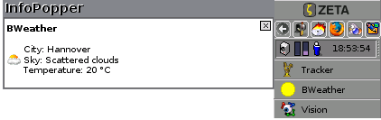

InfoPopper
Introduction
The developer team is constantly looking for new members. If you want to contribute, please don't hesitate to contact us or simply just join us on our IRC channel #beosimkit on irc.freenode.org
As we are all using ZETA, we hope that there are someone that can help us out with compiling a BeOS version of InfoPopper.
 The InfoPopper is a system
wide notification system for ZETA. Any application can send a
notification to InfoPopper which then will display a message next to
the Deskbar. If you have an application that you would like to add
InfoPopper support to, please take a look at the Developers section.
The InfoPopper is a system
wide notification system for ZETA. Any application can send a
notification to InfoPopper which then will display a message next to
the Deskbar. If you have an application that you would like to add
InfoPopper support to, please take a look at the Developers section.
InfoPopper is being developed by the developer team that also does the BeOS Instant Messenger kit, and the notification server started just as a small tool part of the Instant Messenger Kit. It later got taken out of the IM kit and was made in to a separate application. The first version of the InfoPopper was limited to notifications over received instant messages and status changes on your buddies. Today's InfoPopper is capable of notifying you when you receive e-mails, updates of your favourite web sites that carries RSS feeds and when you get a message in Vision or when some of your buddies the Notify List in Vision go online/offline. But also other applications have InfoPopper support.
Be aware that some of the applications that have InfoPopper support are only available for ZETA. Also, the SVG icons and the localization are only available in the ZETA version of InfoPopper. ZETA comes with an Appearence preference applications that lets you set the color to the system and some applications, one of them is of cource InfoPopper:
